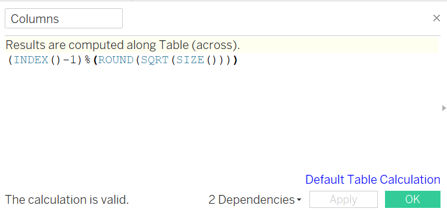
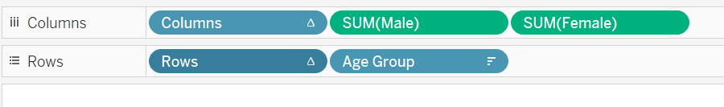
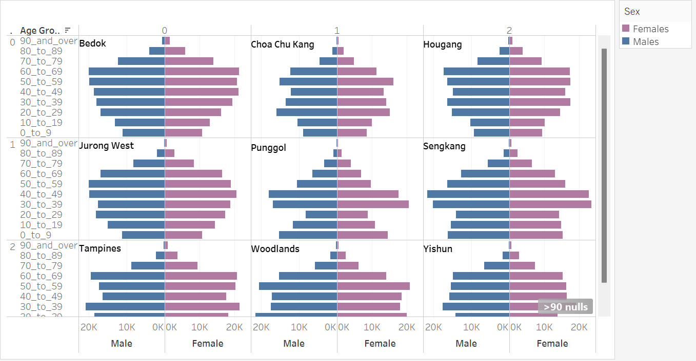
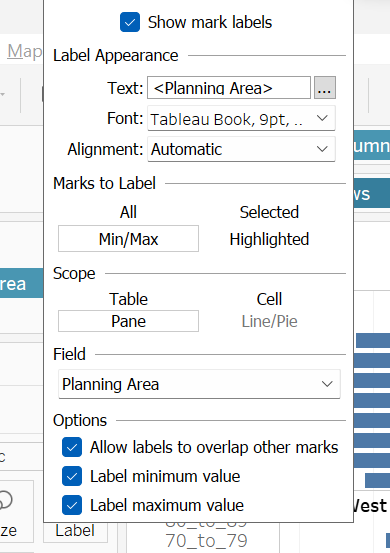
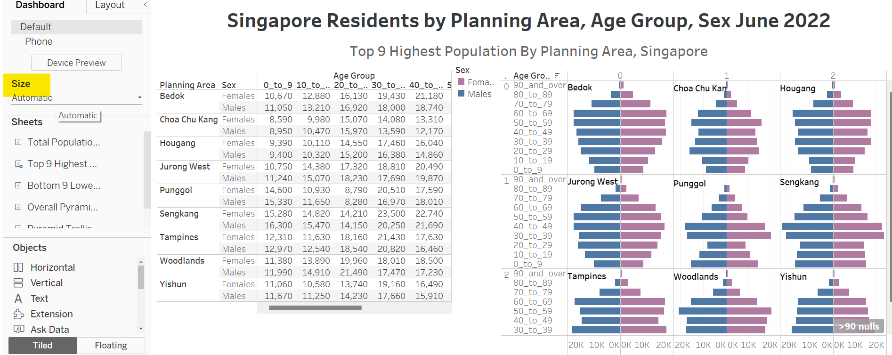

Take-Home_Ex01
Getting Started
Data Overview
Singapore Residents by Planning Area / Subzone, Age Group, Sex and Type of Dwelling, June 2022 is used to prepare the analytical visualization. It is available at Department of Statistics, Singapore(in short SingStat).
The data consists of the following,
| # | Column Name | Column Description |
|---|---|---|
| 1 | PA | Planning Area |
| 2 | SZ | Subzone |
| 3 | AG | Age Group |
| 4 | Sex | Sex |
| 5 | TOD | Type of Dwelling |
| 6 | Pop | Resident Count |
| 7 | Time | Time / Period |
Task
To visualize the provided data in Age-sex pyramid, which is an analytical visualization commonly used by demographers to reveal the structure of population by gender and age group, to reveal the demographic structure of Singapore at planning area level by using age-sex pyramid method.
Step By Step Instructions
Data Preparation
| No. | Instruction | Screenshot |
|---|---|---|
| 1 | Load the downloaded .csv file to Tableau using Connect To a File option. Click More under To a File option and load the data. |  |
| 2. | The loaded file will look like in the given screenshot. |  |
| 3 | The column headers are renamed to readable names for better visualization. |  |
| 4 | Create a new group column for Age group with 10 years as an interval. |  |
Data Visualization
| No. | Instruction | Screenshot |
|---|---|---|
| 1. | Create a new worksheet and load the data by Age group and Sex as shown in the screenshot. | |
| 2. | Create a new worksheet. Create a new calculated field for Female and Male population separately. |  |
| 3. | After loading the Male population to the columns and the Age group to rows, right click on the x axis and select edit axis. Click on the checkbox Reversed and close the dialog box. |  |
| 4. | The next step is to visualize the overall population by Age group and Sex in the form of a Age-Pyramid chart. The left side of the chart denotes the male population, while the right side denotes the female population. |  |
| 5. | Create a new worksheet to load the text table of the Singapore population by planning area and sex. |  |
| 6. | Before proceeding to the next step, click on the arrow button and select Create Calculated Field option. Enter the following formula for columns and rows separately. Columns: (INDEX()-1)%(ROUND(SQRT(SIZE()))) Rows: INT((INDEX()-1)/(ROUND(SQRT(SIZE())))) |
 |
| 7 | Right click on the new Column and Row and select the option Convert to Discrete as shown in the screenshot. |  |
| 8 | In order to create a trellis chart, load Columns and Rows to their respective name tags in tableau worksheet. |  |
| 9 | Select the arrow button on the Columns and select Edit Table Calculation, and select Planning Area checkbox under Compute using. Repeat the same for Rows as well. This will enable us to create a trellis chart by top 9 highest population by planning areas. |  |
| 10 | Repeat the same steps performed in 3 and 4 to create an Age pyramid chart. |  |
| 11 | Select the Planning Area column and enable the option Show mark labels to view the planning area names on the trellis age pyramid chart. |  |
| 12 | Create a new Dashboard and load the text table and the trellis age pyramid chart created. Adjust the size and select Automatic under Size in the left side pane. |  |
Observations
- Birth rate or Fertility late is low. In all the top 9 populated planning areas the bars in the lower region of the graph is smaller compared to the other bars above them. This indicates that the birth rate/fertility rate is low in all these places. This type of pyramid is called as constrictive pyramid, which indicates decline in population. In other words this can also be called as a negative growth in the population. Unless the population starts reproducing, the country will have a demographic emergency.
- Bars of age groups from 20 to 40 is higher than 0 to 20. Age groups between 20 and 40 has a higher width. This suggests that there are a lot of foreigners/immigrants who are in Singapore for higher studies or work.
- Very high population for Age group from 50 to 70. Among most of the graphs the number of people falling under the age category between 50 and 70 is very high. This suggests that there are a lot more elderly people in Singapore compared to other age groups. This usually occurs in a developed country where there is very good health care and very high level of education.
- Male population higher than female population. By comparing the individual age groups in the top 9 populated planning areas of Singapore, most of the graphs follow the same trend where the male population is higher than the female population.